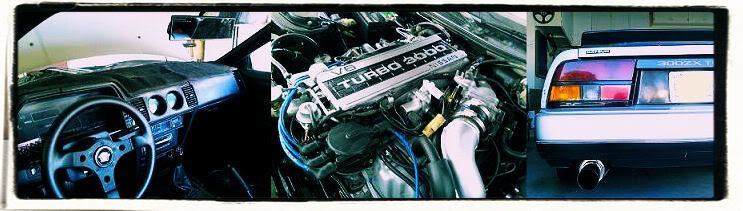

-
Anyone happen to know the thread info for the titania & zirconia sensors? Trying to get a bung made from my local college and he needed to know.
I think i have tomorrow off so i'm going to just pull my 02 sensor and drive my other car to the school since no one has replied to me. -
Do you want to know the thread size for the bushing that screws into the elbow or the thread size of the O2 sensor itself? The only one I know off the top of my head is the threads cut into the elbow that the bushing screws into. These are 22mm X 1.5. I will measure the others for you and post them here.2006 & 2007 Basketball National Champions! 2005, 6, & 7 Basketball SEC Champions! 2006 Football National Champions! 2006 Football SEC Champions! 2008 SEC Champions! 2008 Football National Champions! First University in history to capture three titles in a single year! I was there at all of them, and it was awesome! Go Gators! -
The zirconia (22mm wrench) has a pitch of 1.5 and measures 17.88 mm on my calipers. That should make it a M18 X 1.5. The Titania (17mm wrench) is a M12 X 1.5 Here is a great link:
http://members.pcug.org.au/~jdeakins/facts.html
Hope this helps you out. I am trying to locate the two different part numbers for the bushings. They are not on the same fiche as the O2 sensors. If anyone has the part numbers, please post.
I found an answer to a previous question from the link above:
With Titania sensors:
Black is Reference (Out)
Red is Reference (In) and Heater (+)
White is Heater (-)
Output is 0 to 1 volts.
So they do use one wire for two purposes! Very interesting. I suppose it should also state input is 1 volt. The link does not state the part numbers from the Z31 fiche though. This is what I got from the fiche for the VG30T sensors:
22690-19P20 - 09/85-09/86
22690-21P10 - 09/86 - 08/87
22690-21P11 - 08/87-
Note the mid year change for the '86, I wonder if this is what makes the '86 different. Mine was an early '86.2006 & 2007 Basketball National Champions! 2005, 6, & 7 Basketball SEC Champions! 2006 Football National Champions! 2006 Football SEC Champions! 2008 SEC Champions! 2008 Football National Champions! First University in history to capture three titles in a single year! I was there at all of them, and it was awesome! Go Gators! -
Thank you very much. I've been trying for this answer for a few days now. Appreciate it.CAG8OR wrote: The zirconia (22mm wrench) has a pitch of 1.5 and measures 17.88 mm on my calipers. That should make it a M18 X 1.5. The Titania (17mm wrench) is a M12 X 1.5 -
So if I'm going from 87na to 87T. All I have to do is switch the sensor and ground out the yellow wire. Is that correct? It is just what I gather from the diagrams. Thanks guys! -
Ok, I have an 86NA2T using an 88NA ECU with Nistune. Last night and early this morning I searched through a lot of different places and finally felt confident I knew exactly what to do…SO, here is what I did.
First off, I'm going from the Titania sensor on an 86 to a Zirconia for my 88N/A ECU. Now, my 86 does NOT have the four prong connector like other Titania cars, which I found to be very weird. Also notable is that my car did not have anything coming from Pin 115 on the ECU, which after checking pinouts on Z31.com has been verified. My 24 wire had been cut for some reason, so I found the shielded wire and connected it back the best I could. (Previous owner had a JWT ecu in the car…)
Now, I have made my wiring the same as the diagram as far as I know, and yet I did not get any feedback from the O2 sensor today while checking with Nistune. What have I done wrong?
To Outline what I did: Cut yellow wire on O2 Harness and ran it to pin 115 on the ECU. That's really all I did…I wonder if maybe since I am running a custom exhaust if I should ground my exhaust pipe? My V-band might not be a conductor…
Let me know what you guys think, thanks.1986 300ZX, Got the 85 Turbo Engine, Satan's Exhaust manifold, GT35R, Tial 44mm WG, Tial 50mm BOV, Nistune, 460cc Injectors, Treadstone Intercooler, NGK Wideband, Greddy Profec B Spec II EBC, 16 PSI and rising, heehee.
1993 300ZX Convertible, Pearl White, Bone Stock summer car.
1985 300ZX Turbo Wrecked (Parts car) : ( In her old days
1984 Mitsubishi Starion \
1987 Dodge Conquest - None of them run, LOL
1988 Mitsubishi Starion / -
bump i need more clarification on what CA8OR was saying… is there any way i could just use the zirconia with my 88t ecu and harness?
CAG8OR wrote: Ooops, I did not notice the '86T schematic link above. Thanks, that answers alot of questions. I still am not so sure why my car seemed to run fine with the zirconia sensor & '84T ECU without relocating the ground wire in the harness. I am also having some issues with what the FSM states about the titania sensor. It says that the ECU supplies the sensor with one volt and compares the resistance values using a comparitor. Does it supply the one volt through the same wire it measures the resistance on? This does not happen on the zirconia sensors? What is the purpose of pin 115 on the ECU? I thought this was a ground, which would make the wiring identical electrically.
-
need some really good quick help. I ran a compression test for the AE and It says that i have a bad O2 sensor. I don't know which one i need. They have the 'BEFORE catalytic converter' in stock for my 84 turbo. 'AFTER' is not in stock. I never heard of this deal before but i believe i do need the BEFORE' right?
ALSO, which one should i get if the 'BEFORE is what i need. I'm going to take it to get smogged so the OEM one would probably be the best bet? They got a universal one for $10 more for a reason i don't know.
THANKS IN ADVANCE. -
How did a compression test lead to you to believe you need a new 02 sensor? You mean an emissions test? If so, the factory 02 sensor that is in discussion of this thread is located before the catalytic converter on the exhaust elbow right after the turbine. You're looking for the 22mm, Zirconium 02 sensor for an 84T. The sensors are all Bosch style replacements.86 zD3V1N wrote: need some really good quick help. I ran a compression test for the AE and It says that i have a bad O2 sensor. I don't know which one i need. They have the 'BEFORE catalytic converter' in stock for my 84 turbo. 'AFTER' is not in stock. I never heard of this deal before but i believe i do need the BEFORE' right?
ALSO, which one should i get if the 'BEFORE is what i need. I'm going to take it to get smogged so the OEM one would probably be the best bet? They got a universal one for $10 more for a reason i don't know.
THANKS IN ADVANCE.545 RWHP & 540 RWTQOriginally posted by Andrew84zx
tell her your car is so fast it will make her panties fly off

-
good fast help and yes whoopsy, i meant emissions test. I took it to my automotive instructor in high school. Really smart guy. Atleast i know they have what i need. THANKS a lot. What other things should i target to make sure i can pass emissions so i don't have to spend another 40-50 dollars to get it smogged again? -
Make sure you have a good, unclogged catalytic converter.86 zD3V1N wrote: good fast help and yes whoopsy, i meant emissions test. I took it to my automotive instructor in high school. Really smart guy. Atleast i know they have what i need. THANKS a lot. What other things should i target to make sure i can pass emissions so i don't have to spend another 40-50 dollars to get it smogged again?
Ensure your IAC, EGR, etc are all functioning correctly.
Just make sure the car is in good running shape in general. Change spark plugs, wires, cap, rotor, etc if need be.545 RWHP & 540 RWTQOriginally posted by Andrew84zx
tell her your car is so fast it will make her panties fly off
-
Will do. Good informative response. Thanks. -
EVAP system, for those in CA that didn't know it gets checked for functionality now on pre-OBD2 cars
-
Alright I'm going to drag this thread back. Anyway I'm mildly confused. For one I see it looks like one of the sensors has a ground running off of the Black pin 24 wire? Well I'm beginning to wonder if I have my O2 sensor wired properly. I have a 280ZX Turbo here so this is on an L28ET. I'm running currently an 86' Z31 Turbo ECU with Nistune. I had a bung welded on to my exhaust so I could run the Titania sensor. Here's what I did. I ran the black wire to Pin 24 on the ECU like it should be. I just grounded the negative heater wire to just a spot on the body and I just ran the positive heater wire to an ignition ON 12v source. As far as I can tell this runs correctly, but from what I'm getting out of there it should be run from the fuel pump source as it's a reference wire? I'm planning to switch to a non-turbo ecu with Nistune so I can just go back to running the Zirconia sensor as that's what my L28ETs downpipe is setup for, that way I won't need another bung welded on when I do a new exhaust.CAG8OR wrote:
I found an answer to a previous question from the link above:
With Titania sensors:
Black is Reference (Out)
Red is Reference (In) and Heater (+)
White is Heater (-)
Output is 0 to 1 volts.
So they do use one wire for two purposes! Very interesting. I suppose it should also state input is 1 volt.1976 280Z Turbo 5-speed
1987 300ZX Turbo 5-speed
2008 Mazda 3 GT -
I'm swapping my T25 for a T3 and I just checked the treads of both O2 sensors. They are M18x1.5 and M12x1.25 (not M12x1.5!!) I was going to drill out and tap a M18x1.5 bolt to screw in the titania sensor, but I couldn't find anything with M18x1.5 tread. Guess I'll wire in the old Zirconia.

Copyright © 2006–. All rights reserved. Privacy Policy